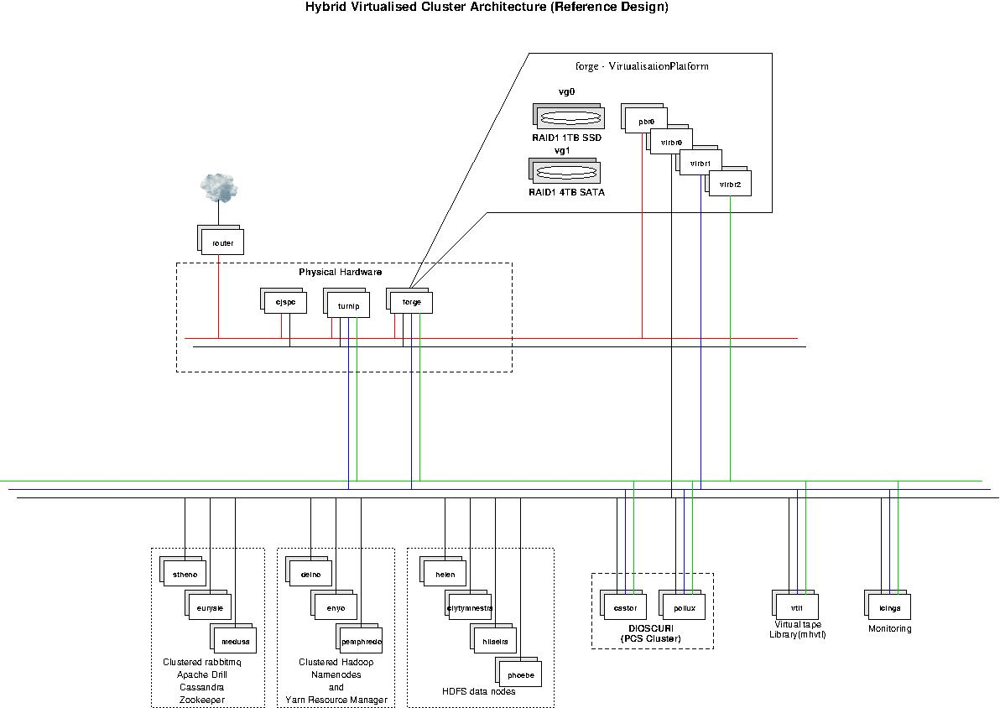
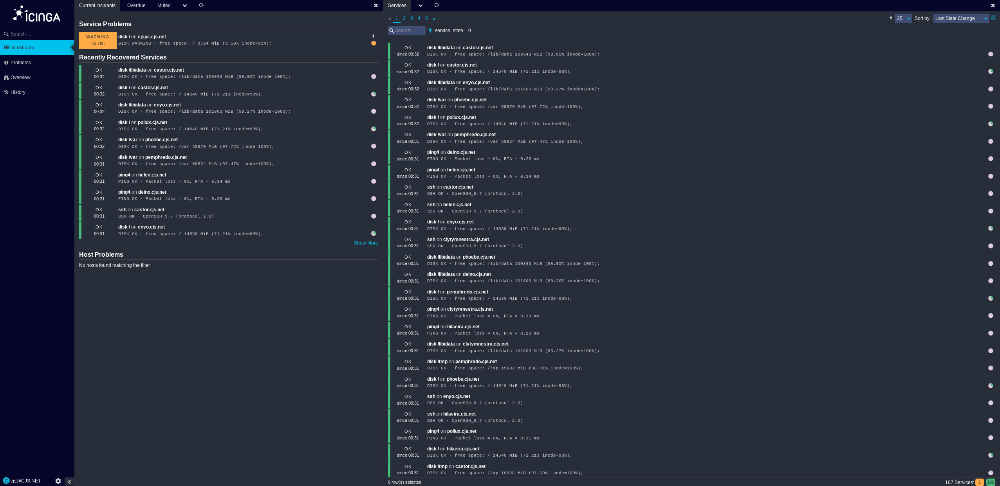
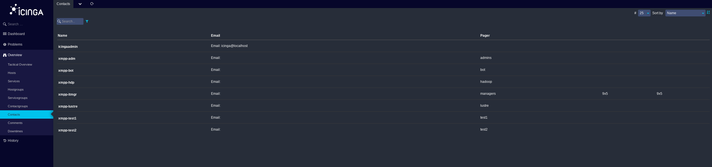
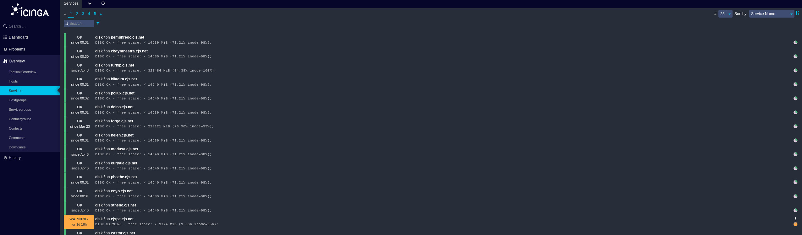
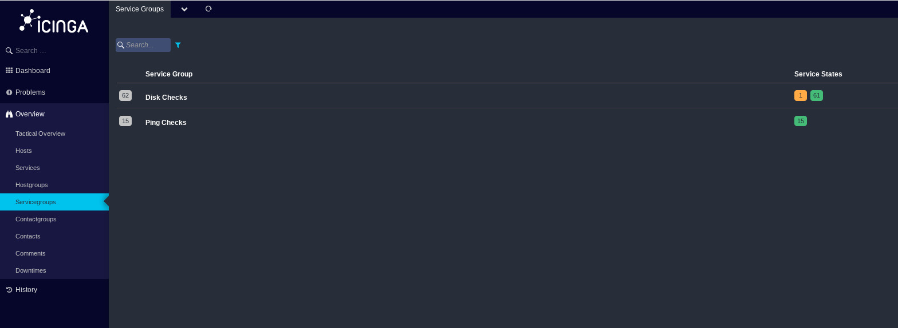
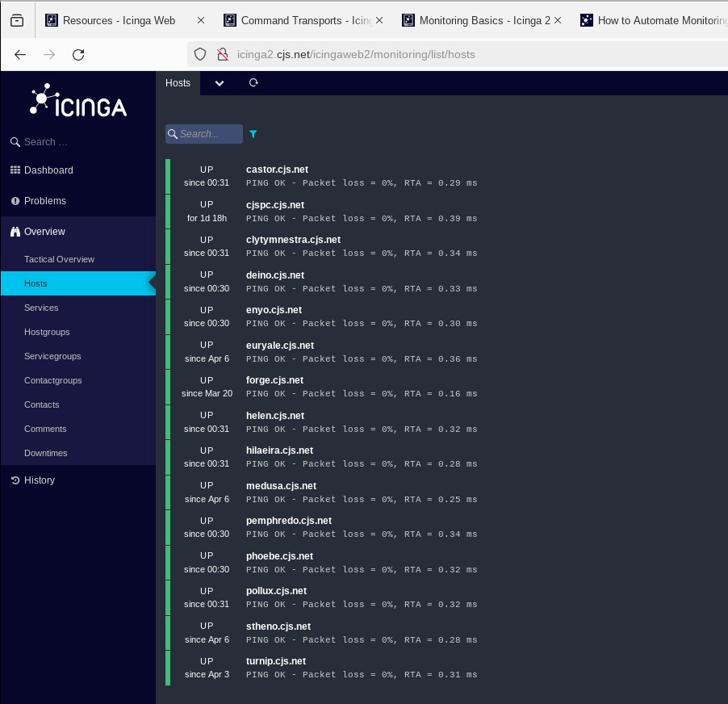
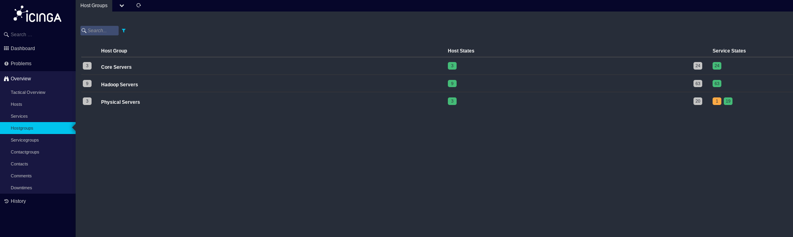
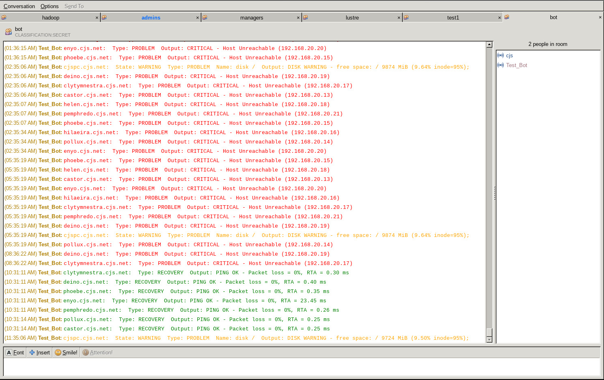

Designed and implemented a hybrid distributed system combining virtualised compute with physical identity and messaging services. The system integrates authentication, orchestration, monitoring, and message-driven components.
A flexible virtualisation environment was required to replicate advanced High Performance Computing Architectures, including Identity Management, Application and XMPP messaging, Name and Directory Services.
The system takes advantage of Qemu virtualisation (chosen over KVM for its ability to emulate NIOS2 and ARM processors), and Linux network bridging. The system makes very heavy used of QCOW2 snapshotting, a bespoke postgress database to manage configurations, and bespoke python code to run virtualised machines using stored parameters.
The reference architecture was realised as a hybrid system comprising virtualised compute nodes hosted on a dedicated VM platform, with supporting physical infrastructure providing identity and control services.
Compute nodes were organised into functional groups supporting distributed storage, messaging, and processing workloads. Core services were distributed across these nodes to allow evaluation of coordination, failover behaviour, and system interaction under load.
A dedicated monitoring node running Icinga2 provided system-wide visibility. Identity and access services were hosted on separate physical systems to maintain a clear trust boundary between authentication and compute layers.
Access to the environment was primarily via SSH and VNC, with a lightweight client system used for interaction and control.
Cluster description...
Virtual machines were provisioned from a set of base "gold" images, representing known-good system states. These images were extended using layered snapshots to introduce role-specific components (e.g. storage, messaging, compute).
Instances were treated as disposable. New nodes were generated from snapshots rather than modified in place, allowing rapid iteration and rollback without impacting the integrity of the base images.
This approach allowed efficient use of limited hardware by oversubscribing resources while maintaining a consistent and reproducible deployment model.
The model prioritised repeatability and speed of deployment over strict resource isolation.
This platform serves as a personal reference architecture for distributed systems, enabling rapid instantiation of clustered services (Hadoop, messaging, monitoring, HA systems, lustre, kubernetes) within a controlled, reproducible environment.
The physical system is oversubscribed—it does not all run concurrently. Use of disposable snapshots, ansible orchestration, gold reference images yields great flexibility for modelling real-world problems.

Icinga2 was configured with a PostgreSQL database as the back-end storage. It monitors the whole environment in terms of node status and principal resources. Not all services are monitored. Real-time reporting is sent to XMPP.
Icinga2 sends Alert and Warning notifications by calling a configurable shell script to execute some python code that sends the message via rabbitMQ, to a java program that read and formats the messages for delivery and display by an OpenFire XMPP chat server. The java XMPP client is fully authenticated to XMPP via MIT Kerberos5.
The complexity provides the flexibility that is necessary to be able to separate notification and alerting on the basis of segregated information.

Dashboard display

Contacts list - group, or user specific notification can be defined, along with priorities, callout windows, etc.

Monitored Services.

Related Services can be grouped and monitored.

Monitored hosts

Related Hosts can be grouped and monitored.

Output from notification infrastructure to an XMPP session.